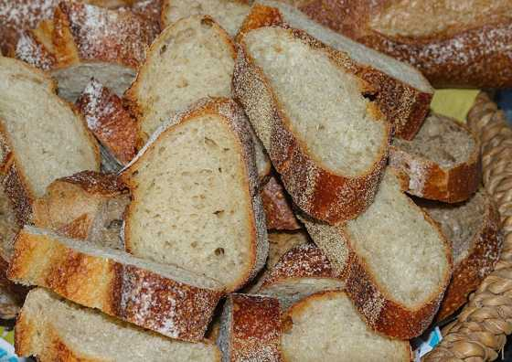
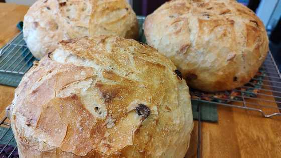
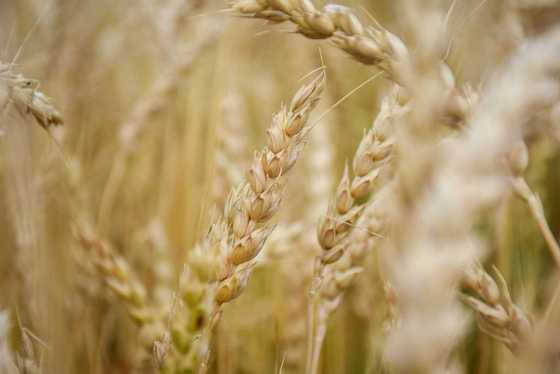
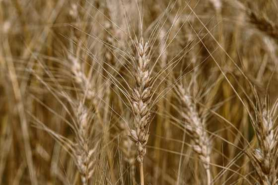
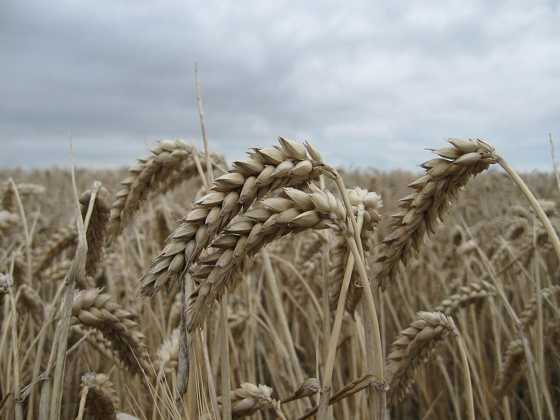

長野県下高井郡山ノ内町佐野
パン工房GARDEN
山と畑にかこまれた庭のような場所で、やさしい味のパンを。
ABOUT
お店について
パン工房GARDENは、2021年5月6日にオープンした山ノ内町佐野のパン屋さんです。地元の工務店が手がけた、自然派の「ナチュラルハウス」風の建物で、広い山々と畑に囲まれています。店内には薪ストーブがあり、ショーケースに並ぶパンはどれも保存料を使っていないと紹介されています。オーナーが定期的にパン教室を開いているため、パンの販売は毎週木・金・土曜日のみとされています(紹介記事の掲載時点。最新の営業日はInstagramでご確認ください)。
情報源: 湯本工務店「パン屋さん『GARDEN』オープン」 / Yahoo!マップ / Instagram
店名の意味や、オーナーの想いについては確認できていません。「庭」のイメージで整えた見出しや文章は制作側のイメージです。


BREAD
パンのこと
紹介記事では、「やさしい味」のメロンパンやカスタードコロネが紹介されています。近所の方がベーグルを買いに来る様子も書かれています。品ぞろえは日によって変わることがあります。
価格・営業時間・定休日・その他の商品は準備中です。






VOICE
口コミ(イメージ例)
以下は雰囲気をお伝えするための創作のイメージ例で、実在のお客様の声ではありません。
イメージ例山あいの静かな場所に、ぽつんと素敵な建物。薪ストーブのある店内で、ゆっくりパンを選べました。
イメージ例メロンパンがやさしい甘さで、朝ごはんにもおやつにもちょうどよかったです。
イメージ例パン教室にも興味があります。気軽に参加できそうな雰囲気がうれしいです。





写真クレジット
写真はすべてフリー素材(縮小・切り抜きなどの加工あり)です。
- 写真「青空と麦の穂」 作者: Dominik Bartsch / CC BY 2.0 / ドイツ撮影のイメージ(p01の使用箇所はトップの大きな写真)
- 写真「麦の穂のアップ」 作者: U.S. Department of Agriculture(rawpixel経由) / CC0 1.0 / 撮影地不明のイメージ
- 写真「木のまな板のスライス食パン」 作者: Mike Finn / CC BY 2.0 / 撮影地不明のイメージ
- 写真「夕暮れ色の麦の穂」 作者: Jazzmaster1997 / CC BY 4.0 / 撮影地不明のイメージ
- 写真「朝日の麦畑」 作者: sagesolar / CC BY 2.0 / 英国撮影のイメージ
- 写真「カゴに盛ったパン」 作者: Friedrich Haag / CC BY-SA 4.0 / 撮影地不明のイメージ
- 写真「麦の穂のアップ」 作者: A S M Jobaer / CC BY-SA 4.0 / バングラデシュ撮影のイメージ
- 写真「網の上で冷ますレーズンパン」 作者: Nutrition, Food Safety & Health(Flickr) / CC0 1.0 / 撮影地不明のイメージ
- 写真「麦畑と青空」 作者: User:Bluemoose / CC BY-SA 3.0 / 撮影地不明のイメージ
- 写真「木の板のバゲット」 作者: jules / stonesoup / CC BY 2.0 / 撮影地不明のイメージ
- 写真「パンの断面」 作者: Nleamy / CC BY 2.5 / 撮影地不明のイメージ
- 写真「食パンの断面」 作者: rawpixel / CC0 1.0 / 撮影地不明のイメージ
- 写真「曇り空の麦の穂」 作者: ㇹヮィㇳ / CC BY 2.0 / 英国撮影のイメージ
- 写真「丘の麦畑と小さな家」 作者: Arno Smit(Unsplash) / CC0 1.0 / 撮影地不明のイメージ
- 写真「金色の麦の穂」 作者: Johan Neven / CC BY 2.0 / 撮影地不明のイメージ